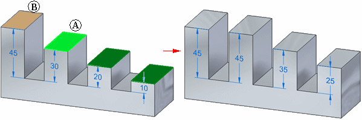
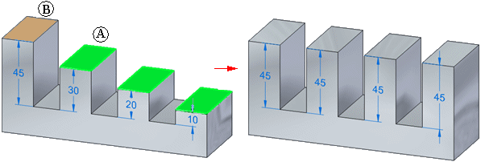

Perpendicular relationship command bar
-
Connected Faces
Specifies how the faces connected to the selection adapt during the modification.
-
Extend/Trim
Modifies the model by trimming and extending adjacent faces.
-
Tip
Modifies the model by allowing the current orientation of connected faces to change. In some situations, this can cause the current orientation of connected faces to tip or change their angle.
-
-
Clash
Specifies how the selected seed faces interact with the model during modification.
-
Select set override
Gives priority to selected and other moving faces over non moving faces.
-
Model override
Gives priority to non moving faces.
-
-
Single/All
Controls how alignment is performed when multiple elements are in the select set. When multiple elements are in the select set, the first element you select is considered the seed element. The seed element is displayed in a different color than the remaining elements in the select set.
-
Single
Specifies that the existing spatial relationship between the seed element (A) and the remaining elements in the select set is not changed by the relate operation. When the Single option is set, the seed element (A) is moved to honor the relationship you specified with respect to the target face (B). The remaining elements in the select set are also moved, but their current spatial relationship to the seed element is maintained. In this example, the coincident relationship was applied.

-
All
Specifies that the spatial relationship between the seed element (A) and the remaining elements in the select set can be changed by the relate operation. When the Multiple option is set, all the elements in the set are moved such that they honor the relationship you specified with respect to the target element (B). In this example, the coplanar relationship was applied, and all faces in the select set were moved such that they are coplanar to the target face (B).

-
-
Persist
Specifies that the applied relationship is maintained if the model is modified later. When the Persist option is set, the relationship is applied, and a relationship entry is added to the Relationships collector in PathFinder. To modify the position of the faces independently later, you can delete the relationship entry from PathFinder.
When the Persist option is cleared, the relationship is applied, but the faces are free to move later, and no relationship is added to PathFinder.
You can also delete a persisted relationship. See Using the Advanced Design Intent panel for more information.
-
Accept
Accepts the operation.
-
Cancel
Cancels the operation.
How do I
Define a relationship between two facesLearn more
Defining relationships between model facesLook up more details
Coplanar commandCoplanar relationship command bar
Concentric command
Concentric relationship command bar
Symmetry command
Symmetry relationship command bar
Offset command
Offset relationship command bar
Parallel command
Parallel relationship command bar
Aligned Holes command
Aligned Holes relationship command bar
Equal Radius command
Equal radius relationship command bar
Perpendicular command
Tangent command
Tangent relationship command bar
Horizontal and Vertical command
Horizontal and vertical relationship command bar
Ground command
Ground relationship command bar
Rigid command
Rigid relationship command bar